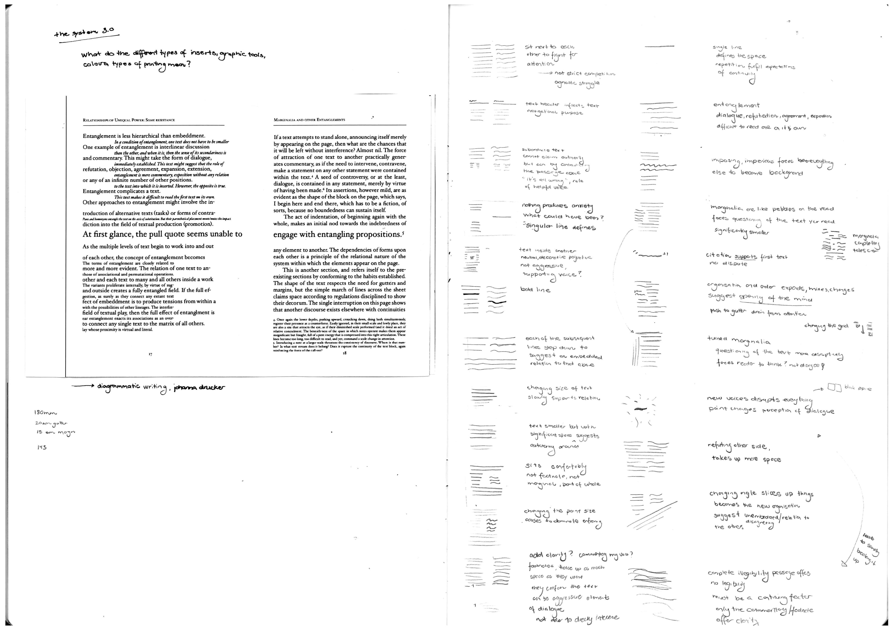
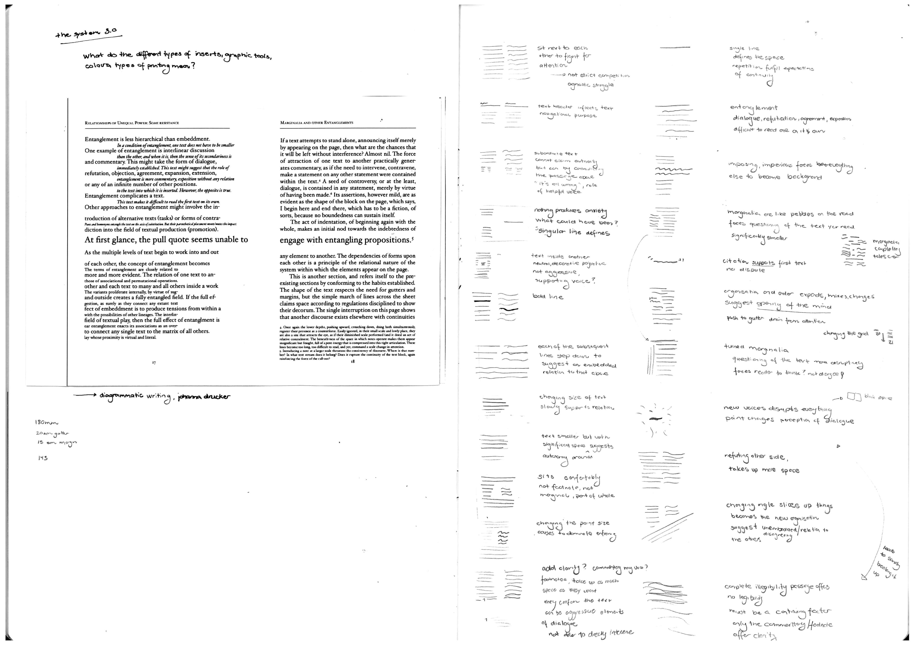
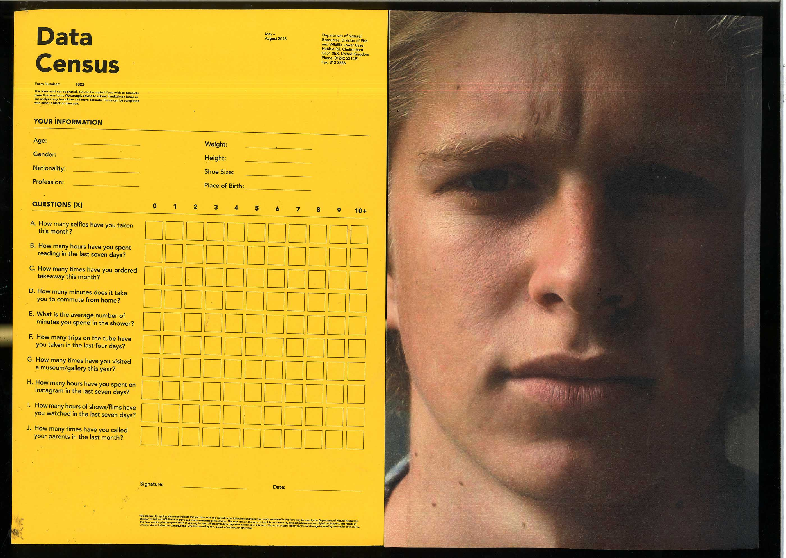
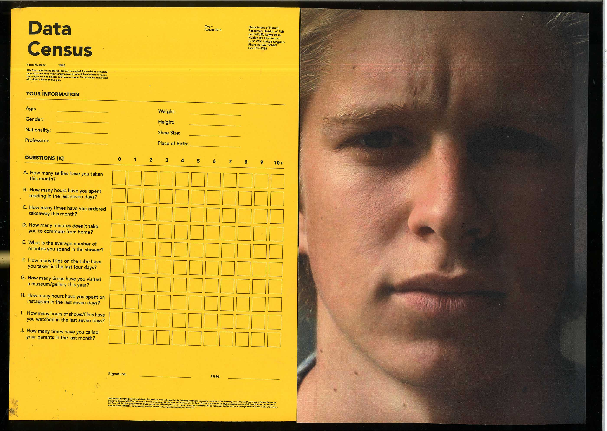
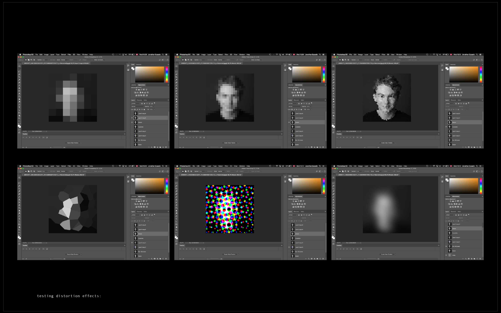
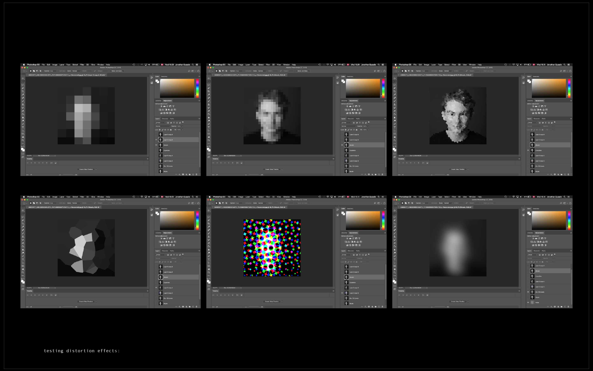

Peter Hall is Senior Lecturer and Course Leader, BA (Hons) Graphic Communication Design at Central Saint Martins. His research uses mapping and visualisation as participatory design processes, with recent applications in cyber security, health and well-being. He sat down with me to explore his latest research into the quantified self and graphic communication design's role in creating humanity's uncertain future.
-- Hello Peter.
Hello Jonathan.
-- You have a chapter on the quantified self in your new (unreleased) book. What is the quantified self-movement? And what are the positives and negatives of this movement?
Quantified Self, with capital q and capital s, is a movement started by Kevin Kelly and Gary Wolf. There is also the lowercase quantified self, like the movement sociologist Deborah Lupton discusses in her book with the same name. The actual movement started in California by former Wired magazine editors in 2011. They have an annual conference, international online group meetings and a big expo conference where all the tech companies also show up and sell their latest biometric sensors. What they celebrate is what they call ‘self-knowledge through numbers’. The conference and the expo are very much about people standing up saying, “I’ve been measuring my heart rate for a year and this is how it correlates with my activity”.
The movement varies from what seems incredibly narcissistic and frankly pointless to a genuine interest in the notion that whereby sharing data we can improve our understanding of the body and take control of healthcare. The latter is the side that I respect. Thus, instead of you showing up to the doctor saying, “There's something wrong with me. I don't know what it is.” Or feeling like you go to a hospital and surrender to a system that just tells you about your body. You actually have an understanding of your body and how it functions, and you've grown that knowledge through sharing with others. The chapter in my book is very much about how the quantified self-movement owes a lot of its methods to kind of productivist mindset.
-- So the mindset that by collecting and harvesting data about yourself you can become more effective?
Yes, which links philosophically to the idea of the Industrial Age. A combination of puritanical Protestant work ethic plus industrialisation. How we can make the human body more efficient for the production of capital. The idea is very interesting to critique the quantified self movement through because it means that when I turn on my watch to time my journey home or upload it to Strava, there is a direct link to Taylorism - the early 20th century stop motion studies by Frederick Taylor. He studied how long the worker on the assembly line took to move this widget from here to there 15,000 times, in order to figure out how it could be done to boost productivity. It's very helpful to think critically about what we're doing to ourselves when we ‘quantify ourselves’ and whose standards we're measuring ourselves against.
-- Let’s keep exploring this topic. The claims of big data, machine learning and AI are that inputs suitability quantified might be processed to predict and thus control future outcomes. This is often called the datafication of the world.
What are the potential dangers of this belief especially in relation to the quantified self-movement?
Evgeny Morozov writes about this very critically. He skewers the quantified self-movement and describes their approaches as ‘Taylorism within’. Somehow we have incorporated the assembly line logic of the early 20th century and turned it on ourselves, which fits very much with the neoliberal mindset.
So to use healthcare as an example, by us personally becoming responsible for our own healthcare, it counters the idea of healthcare being a social service or national service. At the same time what you're implying is that there is a surveillance side to all this. In uploading our data continuously, we're potentially making our data available to insurance companies who can then gauge the price of our life insurance based on the data that we've voluntarily uploaded. This is a really slippery slope of turning ourselves into, let’s say, quantifiable commodities.. for free! and for the benefit of large corporations. All voluntarily.
-- You wrote a book about mapping published by the Minnesota Press. So as we map the environment, the human body and the human experience through quantifiable metrics, what do you predict to happen to society? What if humans become obsessed with constantly updating themselves?
I mean I'm definitely not a techno-utopian. I don't think self-knowledge through numbers is an idea that can be embraced without reservations. I was just reading that Nicholas Carr essay that was distributed to your class on Tuesday. He makes a very open notion that we shape our tools and thereafter they shape us, as Marshall McLuhan said. The things that were invented are changing the way we behave or even the way our brains work. So I like that Nicholas Carr essay because he's quite honest about his inability to read long texts anymore. That's quite a really interesting way into the critique by starting with what it was doing to him. I'm not total dystopian. I just think that what is needed is a critical awareness about what we're doing to ourselves with our inventions, so we can use them sensibly with caution. Also, we should be thinking about how to subvert them so that the agendas written into them can be turned to creative or subversive purposes. I’m probably somewhere in between. Definitely, I don't think we're powerless.
-- Right now there is a dystopian scenario playing out, which I wanted us to discuss. It is indicative of what the quantified self-movement may cause. China has been piloting their social credit system since 2015 in ‘small villages,’ which in China is millions and millions of people. Each citizen gets a 1000 points. Good deeds (returning a wallet, donating, volunteer work) boost your score, bad deeds (stealing, racketeering, even beating your wife) reduces your score. Positive scores can lead to better interest rates, loans housing, education etc. However, others with lower ratings have been blocked from certain services. For example, if you have below 950 points you’re blocked from certain services. 11,000,000 Chinese citizens have been blocked from buying flights under the pilot programme. The system launches in 2020, possibly reducing every interaction to a transaction. The mass quantified self-movement. China is datafied the entire population to ‘increase performance.’ Thoughts on this phenomenon?
I mean my immediate reaction is horror actually. Because it's extending the quantification beyond profit-making to a punitive system. It’s a form of discipline and punishment to use Foucault terms. One part that really troubles me is related to how I've been collecting error messages. They are really interesting because we come across them every day and we get frustrated, but we think it is just normal. It seems there are more and more error messages. “You cannot access this service”. “Sorry, this is not available at this time.” “Sorry, our system is down blah blah blah” So imagine combining this inevitability of error messages with a big data method of punitive, discipline-and-control method organizing society that seems to be piloted in China as you're describing. For the most innocent person, you could suddenly find your data scores wiped. Maybe you’ve done something that was misinterpreted and it's dropped your score so you can't access services. We’re all familiar with the frustration of trying to appeal to a machine against the decision. I can only imagine how awful that would be. Suppose you can't access the NHS anymore because you've been reported to have vandalized your neighbour's car. It seems like the removal of a fair system of law that's overseen by a social contract of people and replaced by algorithms and numbers. I find it a little bit terrifying.
-- It was good to hear your thoughts as often the topic is discussed as a future scenario, but these developments are occurring right now. We talked a bit about what is happening more generally to the human population and the quantified self-movement, so let’s focus in on the individual person.
-- In Regimen of Visibility and Vigilance in the Era of Digital Identity, Alejandra Lopez Gabrieldis investigates the relation between data and the self. She said thanks ‘to the possibility of storing, recording and replaying data from human daily behaviour, humans are creating a reflective mirror one that is interactive of capable of driving an actor to comply’. Thus, aren’t we all part of the quantified self-movement as we can track our behaviour everywhere? Where do the distinctions lie between the quantified self- movement and any other individual today?
It’s hard to not come off sounding like a complete Luddite. I don't think it's is advantageous to think all technology is terrible and say “Look at social media. We should cancel it now.” But rather consider what the effects are and then adjust our behaviour or the technology accordingly.
For example, we really ought to be trying other search engines than Google which uses cookies, tracks everything and caters searches according to our history. There were other types of mapping system before Google became the default. These resistances to these phenomena are fascinating. For example, how people have responded to Google Street View. Open Street Maps is a type of resistance because it’s a wiki style mapping service or Michael Wolfe who went through all the Google Street View footage and found people giving the finger to the Street View cars, compiling them all in one exhibition. Acts of resistance are not only creative and entertaining but are important to draw our attention to the unconscious effects of technology.
To come back to your question, the distinction may lie in a term called the obligatory passage point. This is where technology is purposely developed to the point where everybody is forced to use it. So Google Maps is an example and even more universally is mp3, where there was a large debate amongst sound engineers about the most suitable methods for compressing music. Interestingly, mp3 was one of worst quality compressions. Yet, it backfired in the end, when people again started questioning whether mp3 was the most suitable method of compression. The backfiring happens when the obligatory passage point stops functioning as supposed to, is overridden or subverted. Sometimes it is market forces. However other times it is creative interventions and refusals that help that happen. I'm not saying all obligatory passage points are bad but it's a useful term for understanding how technology forces us to comply to use your phrase and figuring out the distinction between the quantified self movement and ‘ordinary’ people.
-- The idea that we have reached an obligatory passage points and that we're creating others versions of ourselves that we comply to is why I'm fascinated by the quantified self-movement. I believe we are extending ourselves into another platform. It is not us but it is us at the same time. Instagram for example becomes the way that I see, react and understand you but it's not really you. But this ‘scrolling memory list’ also becomes the way that you see and think about yourself. So can the quantified self-movement can be a preliminary model for what's happening to the self?
I think you're absolutely right. The quantified self is a really good example. There's a phrase that Lupton uses in her book, The Quantified Self, called ‘the spectacular body’. The spectacular body describes a curious situation where for example you go to the doctor. Let’s say you are an alien watching a doctor's consultation with a patient. As the alien, you might think that the patient was actually the screen because the doctor spends more time looking at the screen with the patient than looking at their actual patient. There's a spectacular or quantified or visualized representation of the self on the screen that is more of importance to the doctor or appears to be.
I believe the same thing happens when uploading ourselves through Instagram or Strava or so forth. Cyber-utopians see uploading everything as a great thing. Some of the zealots in the quantified self-movement imagine a future when we become disembodied, becoming these floating souls somehow better than our fleshly selves. I wonder if this singularity wish is wedded into the old Christian notion that the body is the source of sin and the transcendent body is the where the godliness is. This notion is so shackled to a particular Western logic that is unhelpful.
--So we’ve basically established that quantifying the world and datafication is something that is not isolated to a single movement. Whether we like or not, were part of this evolution. Whether we are complicit in it or in reaction to it, we're trying to not comply. Quantifying the world and datafication are thus not isolated to a movement. How would or is it impacting the graphic design industry? Especially as you are the BA course leader, for the course (BA Graphic Communication Design).
That's a nice question. I’ve given a lot of thought to how you build critical skills into what's traditionally been seen as a more instrumental form of education. In art schools, there's been a tendency to treat graphic designers as the commercial ugly stepsister of fine art, and also to treat it as the acquisition of very good instrumental skills, in order for you to go out, take orders and make things look pretty.
However, my absolute belief and mission is to bring critical thinking into the graphic design practice, which is not achieved with more art history classes. I think it's done through practice. It’s done with thinking-through-making. In that way, young designers are constantly required to contextualize their technical skills in the light of philosophy and constantly scrutinise their skills. This education is one wherein critical thinking-through-making sends more critically equipped thinkers out into the world of graphic design practice. These new thinkers can turn around to those who have traditionally given the orders, who’ve said “Make this look pretty”, and say “What actually is that the problem? Or is there another problem behind the problem?”.
It is key to educate graduates to start their own project and find like-minded individuals willing to do things differently. We are at a crisis point, you know. I don't think any educator, or any intelligent educate for that matter, could not in good faith continue to believe the churning out graphic designers who are only capable of producing pretty things to sell more trash. We’re at a tipping point with climate change, population growth, city management etc. We desperately need critically equipped curious designers who can understand how to develop systems to support massive populations live in massive cities amid extreme weather, angelisation and the singularity.
-- Do you think graphic designers have been complicit in allowing quantified data analysis and being to complicit in just agreeing to ‘order’?
Yes, it has been complicit because of the nature of how the profession was conceived, being born out of advertising and promotion. And unfortunately, in the early birth of graphic design, the secondary need of recognising the problematization of systems, the organisation of new systems and working with new problems in proactive ways was not part of the agenda. It was just to sell stuff and make it culturally appealing.
-- Jessica Helfand said something which stopped me in my tracks when she discussed how graphic design has done everything but save the world. She made me think, ‘when has graphic design gone out advocating and criticising the world?’ When have our industry leaders constructively criticised or attempted to change the industry and/or the world?
But in light of what we have discussed, for myself and others part of the next generation, what are the most important things for us to do, understand and explore? As my course leader, what would your finals words wisdom be as I prepare to leave these walls at Central Saint Martins in five months?
Remain curious and keep asking excellent questions. Keep asking and investigating with all of your intellectual and research powers. Thinking graphic designers are really needed in the world. That point about what should graphic designers be doing is really important. It is possible and you should build new networks of trust, care, resilience and informal economies and to contribute to resilient grassroots mechanisms that can help us withstand the onslaught of climate change, the singularity, housing crisis etc. There is hope. But one has to be focused, very focused.
One of the teachers of Hogwarts would always say have ‘constant vigilance’. It's a really challenging time. I’m so very happy that on this course there is room for people like yourself to explore these ethical and intellectual issues with all your heart and passion. So I guess I would say to all of you, keep doing it!
-- Thank you very much, Peter.
My pleasure!
☰
Quantified Self. (2015). Quantified Self - Self Knowledge Through Numbers. [online] Available at http://quantifiedself.com/ [Accessed 14 Jan. 2019].
Lupton, D. (2016). The quantified self. 3rd ed. Cambridge: Polity.
The Economist. (2009). Scientific management. [online] Available at: . https://www.economist.com/news/2009/02/09/scientific-management [Accessed 14 Jan. 2019]
Morozov, E. (2017). The digital hippies want to integrate life and work – but not in a good way. [online] the Guardian. Available at: https://www.theguardian.com/commentisfree/2017/dec/03/digital-hippies-integrate-life-and-work-wework-data-firms [Accessed 16 Jan. 2019].
Abrams, J. and Hall, P. (2006). Else/where: mapping. Minneapolis, Minn: University of Minnesota Design Institute.
Carr, N. (2008). Is Google Making Us Stupid?. [online] The Atlantic. Available at:https://www.theatlantic.com/magazine/archive/2008/07/is-google-making-us-stupid/306868/[Accessed 8 Jan. 2019].
Vice News (2018). China’s "Social Credit System" Has Caused More Than Just Public Shaming (HBO). [video] Available at:https://www.youtube.com/watch?v=Dkw15LkZ_Kw&ab_channel=VICENews [Accessed 10 Dec. 2018].
Alejandra Lópz Gabrieldis, “Régiment de visibilidad y vigilancia en la era de la Identidad Digital,” Teknocultura:Revista de Cultura Digital y Movimientos Social vol. 12, no.3 (2015)
Wolf, M. (n.d.). MICHAEL WOLF PHOTOGRAPHY. [online] Photomichaelwolf.com. Available at: http://photomichaelwolf.com/#fuck-you/1[Accessed 15 Jan. 2019].
Lupton, D. (2016). The quantified self. 3rd ed. Cambridge: Polity.
Helfand, J. (2016). Design: The Invention of Desire. Yale University Press.


 



 



 
